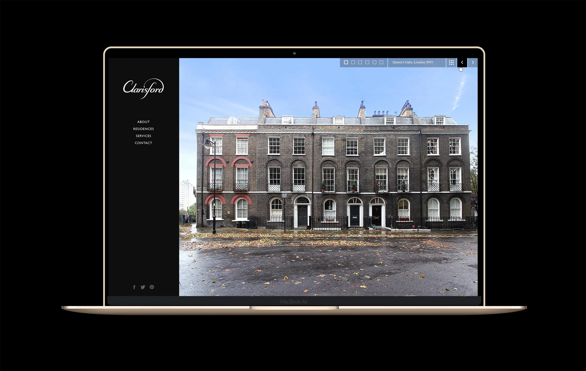
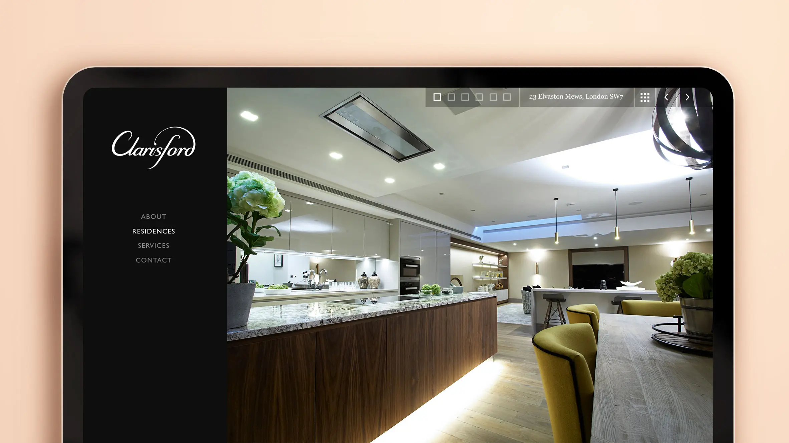
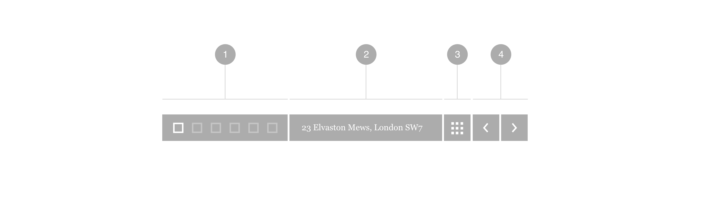
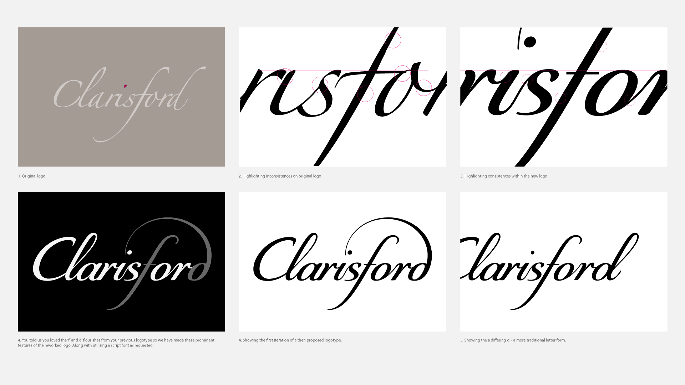
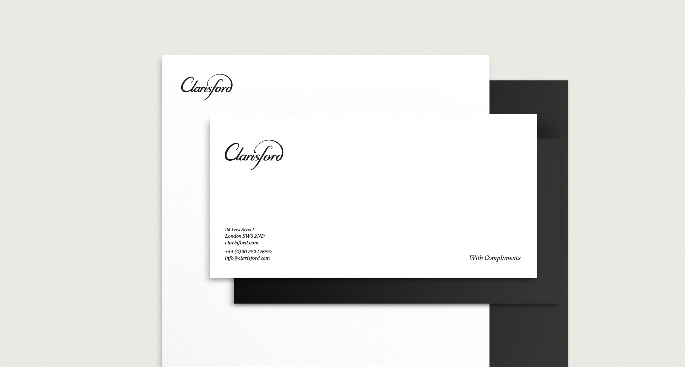
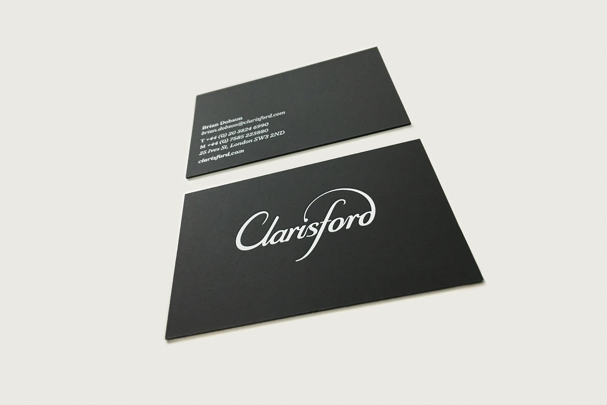

Photography: My lovely friend, Colin Streater





We were looking for someone to pay as much attention to detail in rebranding and creating our website as they would if it was their own and we were not disappointed